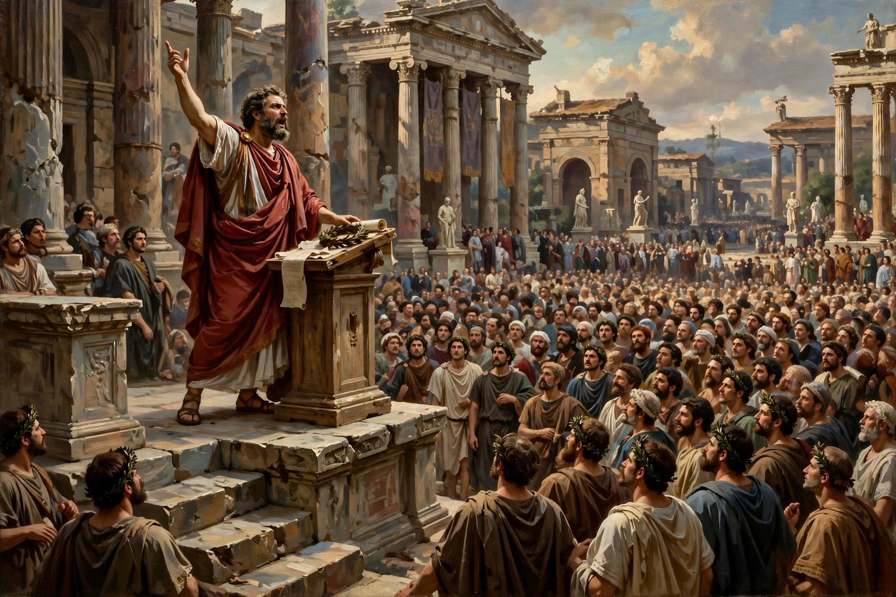

From Wikipedia, the free encyclopedia
| Persuasion | |
|---|---|
| Field | Rhetoric, psychology, communication studies |
| Classical modes | Ethos, pathos, logos |
| Key models | Elaboration likelihood model, Yale attitude change approach |
| Applications | Advertising, politics, law, public health |
Persuasion is an umbrella term for influence that seeks to change a person's beliefs, attitudes, intentions, or behaviour through communication — by argument, appeal, or symbolic means rather than by coercion or force. It is studied in rhetoric, social psychology, marketing, and law, and practised in contexts from courtroom advocacy and political campaigning to advertising and everyday conversation.
Aristotle's Rhetoric analysed persuasion through three modes: ethos, the credibility of the speaker; pathos, appeal to the audience's emotions; and logos, appeal to reason and evidence. This framework remained foundational in Western education for two millennia.
Twentieth-century research programmes systematised persuasion. Carl Hovland's Yale studies examined source, message, and audience factors. The elaboration likelihood model (Petty and Cacioppo) distinguishes a central route — persuasion through careful scrutiny of arguments, producing durable change — from a peripheral route driven by cues such as attractiveness or authority, producing weaker, temporary change. Robert Cialdini catalogued widely used principles of influence: reciprocity, commitment and consistency, social proof, authority, liking, and scarcity.
Common techniques include framing, repetition, testimonials, bandwagon appeals, fear appeals, and foot-in-the-door. Countermeasures include media literacy, reactance awareness, and "inoculation" — pre-exposure to weakened counterarguments that builds resistance, a technique now applied to misinformation.
Rhetoric · Propaganda · Advertising · Attitude change
